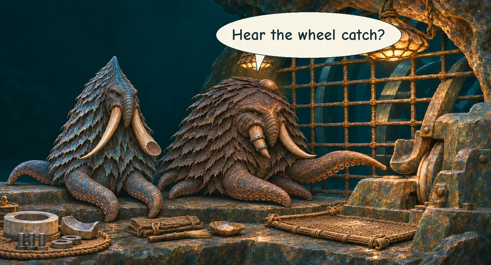
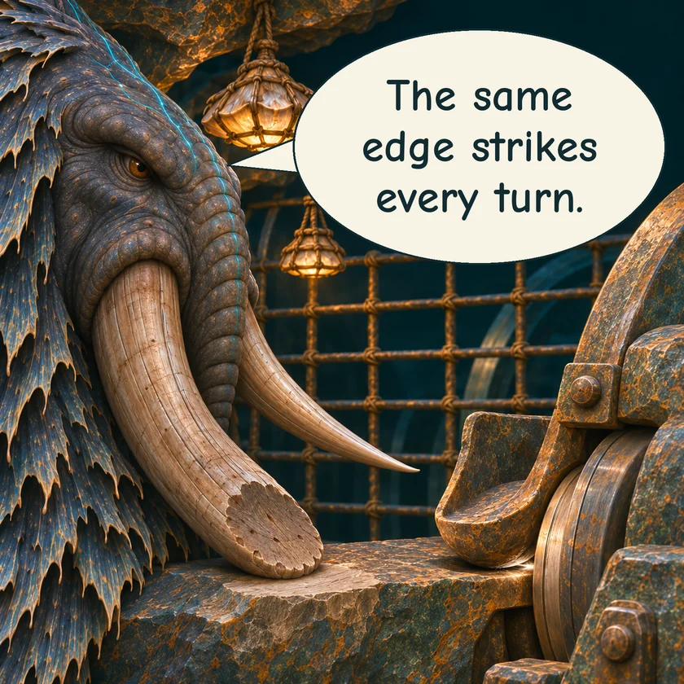
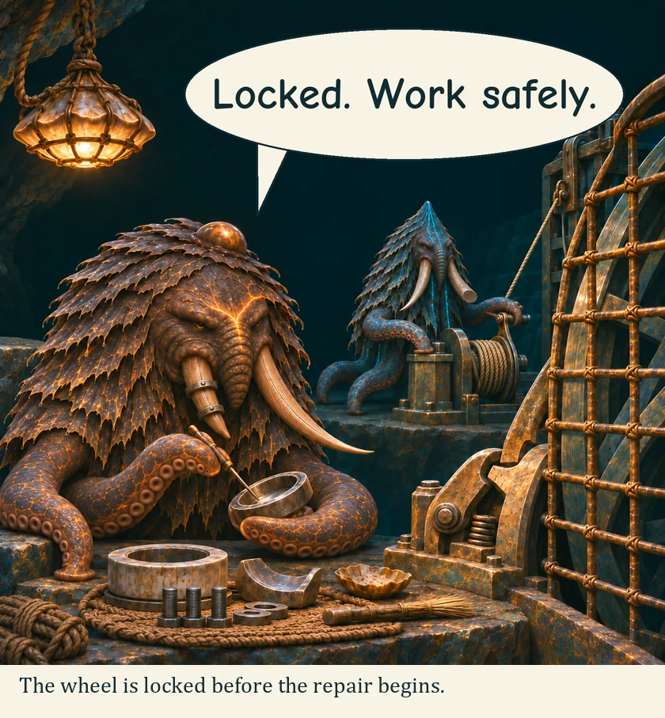
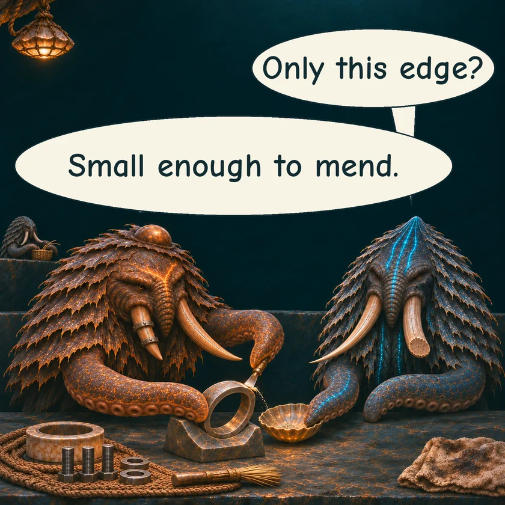
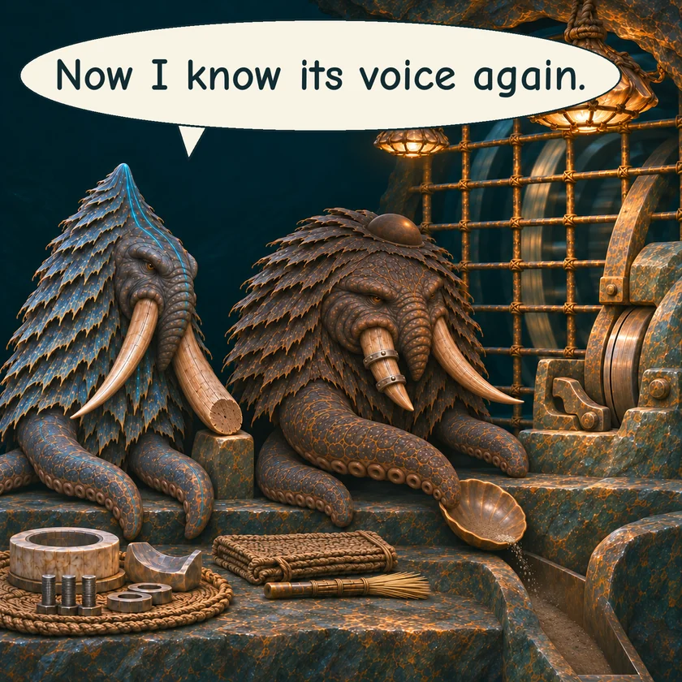

THE ORUUN · TEN YEARS BEFORE HUMANITY AWAKENS
The Voice of the Wheel
Mera and Varo know the sound of Hushwheel at work. Today, one beat catches.
MERA · Mill keeperVARO · Road guide





The wheel turns, and its familiar voice returns.
Read the words
Hear the wheel catch?
The same edge strikes every turn.
The wheel is locked before the repair begins.
Locked. Work safely.
Only this edge?
Small enough to mend.
Now I know its voice again.